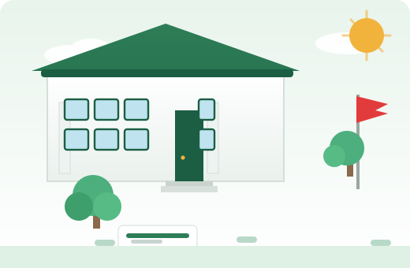

SD Negeri 2 Klambu mendidik generasi emas Kecamatan Klambu dengan pembelajaran aktif, lingkungan yang ramah anak, dan nilai-nilai luhur bangsa.

Kepala Sekolah
"Pendidikan adalah perjalanan panjang. Di SDN 2 Klambu, setiap anak kami dampingi tumbuh dengan bahagia, berkarakter, dan berprestasi."
Assalamu'alaikum warahmatullahi wabarakatuh. Puji syukur ke hadirat Tuhan Yang Maha Esa, website resmi SD Negeri 2 Klambu hadir sebagai jendela informasi sekolah — profil, program pendidikan, jalur PPDB, hingga kegiatan harian peserta didik.
Kami percaya setiap anak membawa fitrah kebaikan dan potensi uniknya sendiri. Tugas kami bersama orang tua dan masyarakat adalah merawat api rasa ingin tahu itu, menanamkan nilai kejujuran dan disiplin, serta mempersiapkan mereka menjadi generasi emas Indonesia 2045.
Layanan pendidikan kami didesain agar setiap peserta didik tumbuh optimal — cerdas, berkarakter, dan selangkah lebih siap menghadapi masa depan.
Fasilitas kami sederhana namun terpelihara dengan penuh perhatian: ruang kelas nyaman dan aman, perpustakaan mini, musala, dan halaman hijau tempat anak bermain dan bertumbuh.
Pendaftaran peserta didik baru dibuka setiap bulan Juni–Juli. Informasi lengkap di halaman PPDB.